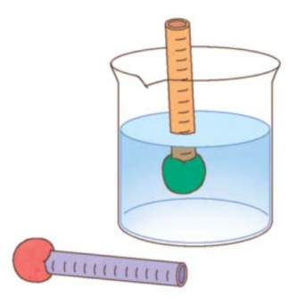

1번
다음은 용액의 진하기를 비교하는 기구 만들기 계획의 일부입니다. 잘못된 내용을 선택하세요.

개요
기구의 원리
ㄱ
용액이 진할수록 용액에 넣은 물체가 깊게 잠기는 원리를 이용한다.
문제점
ㄴ
5~8cm 길이로 굵은 빨대를 자른다.
ㄷ
자를 이용하여 자른 빨대에 일정한 간격으로 눈금을 표시한다.
ㄹ
굵은 빨대의 한쪽 끝에 고무찰흙을 붙인다.
완성한 기구로 설탕 용액의 진하기를 비교한다.